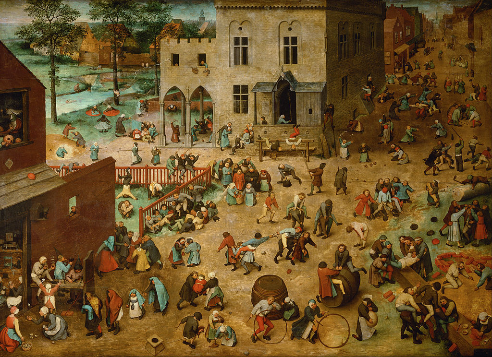

<head>
<meta charset="UTF-8" />
<meta name="keywords" content="drawing, painting" />
<meta name="description" content="drawings by Sunjy" />
<title>Sunjy</title>
<link rel="shortcut icon" type="image/x-icon" href="../../mImages/mCommon/favicon.ico" media="screen" />
<link rel="stylesheet" type="text/css" href="../../mCsses/mCommon/mCssA.css" />
<link rel="stylesheet" type="text/css" href="../../mCsses/mCommon/mCssB.css" />
<link rel="stylesheet" type="text/css" href="../../mCsses/mCommon/mCssC.css" />
<link rel="stylesheet" type="text/css" href="../../mCsses/mCommon/mCssD.css" />
<link rel="stylesheet" type="text/css" href="../../mCsses/mContent/mCssA.css" />
<link rel="stylesheet" type="text/css" href="../../mCsses/mContent/mCssB.css" />
<link rel="stylesheet" type="text/css" href="../../mCsses/mContent/mCssC.css" />
<link rel="stylesheet" type="text/css" href="../../mCsses/mContent/mCssD.css" />
</head>
<script type="text/javascript" src="../../mScripts/mContent/mContentAA.js" /></script>
<script type="text/javascript" src="../../mScripts/mContent/mContentAB.js" /></script>
<script type="text/javascript" src="../../mScripts/mContent/mContentAC.js" /></script>
<script type="text/javascript" src="../../mScripts/mContent/mContentAD.js" /></script>
<script type="text/javascript"></script> 
<script type="text/javascript">
document.write('<div class="mImgAbsolute"></div>');
/*
document.write('<p class="mFontSizeBColor" />From a white paper...</p>');
document.write('<table class="center"><tr><td>');
document.write('');
document.write('</td></tr></table>');
*/
</script>


<script type="text/javascript">
document.write('<p class="mFontSizeBColor" />Children’s Games</p>');
document.write('<p class="mFontSizeSColor" />“Children’s Games” by Pieter Bruegel, the Elder depicts children, who range in age from toddlers to adolescents, who, in some cases, look like miniature adults, playing games.<br><br>The games include roll hoops, walk on stilts, spin hoops, ride hobby-horses, mock stage tournaments, play leap-frog and blind man’s bluff, do handstands and play with toys.<br><br>The children have also taken over the sizeable civic building that dominates the square. Even in the top left-hand corner, children are bathing in the river and playing on its banks.<br><br>Bruegel’s intention for this work was not just to compile an illustrated collection of children’s games. His moral message was that for God, children’s games have as much significance as the activities of their parents.<br><br>This moral idea was influenced by a contemporary poem published in Antwerp in 1530 in which humanity is compared to children who are entirely absorbed in their games and concerns.<br></p>');
document.write('<table class="center" /><tr><td>');
document.write('<br>The games include roll hoops, walk on stilts, spin hoops, ride hobby-horses, mock stage tournaments, play leap-frog and blind man’s bluff, do handstands and play with toys.<br><br>The children have also taken over the sizeable civic building that dominates the square. Even in the top left-hand corner, children are bathing in the river and playing on its banks.<br><br>Bruegel’s intention for this work was not just to compile an illustrated collection of children’s games. His moral message was that for God, children’s games have as much significance as the activities of their parents.<br><br>This moral idea was influenced by a contemporary poem published in Antwerp in 1530 in which humanity is compared to children who are entirely absorbed in their games and concerns.<br>" />');
document.write('</td></tr></table>');
</script>


